こちらの記事はＡＩ（Gemini Pro）で作成し、一部加筆しています😁
2025.2に食べに行きました😄
今回訪れたのは、那覇市久茂地にある「Southwest Grand Hotel（サウスウエストグランドホテル）」の1階に入っている「SHIKAKU（シカク）」さんです。もう外観からして、オーラが違いますね。ホテルの1階ということもあって、コンクリート打ちっぱなしのスタイリッシュな壁に、シーサーが鎮座しているんですが、このシーサーすらもなんだかシュッとしていて現代アートみたいに見えますね✨
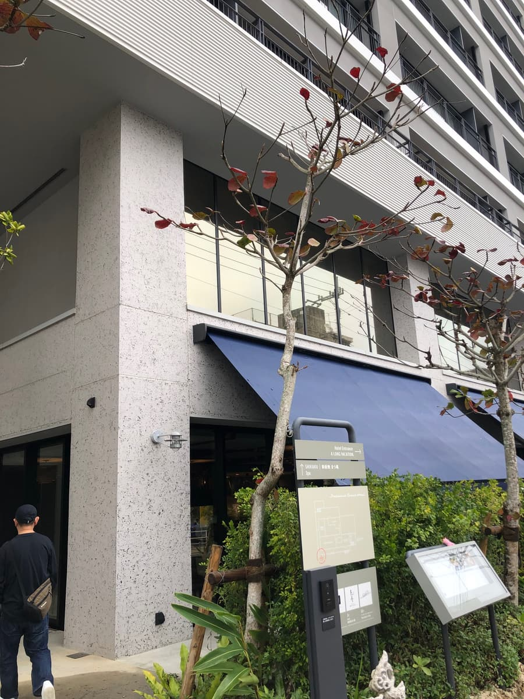
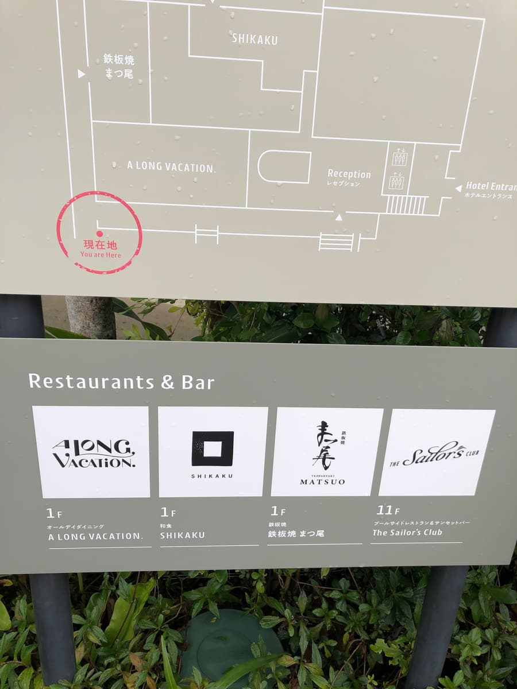
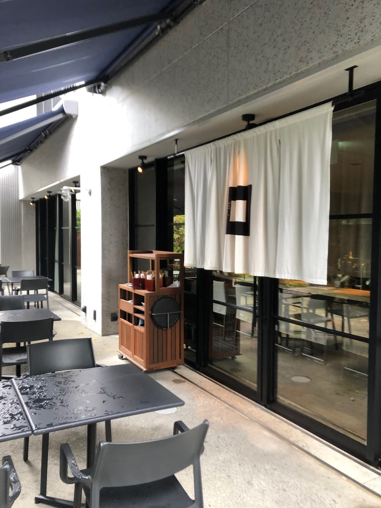
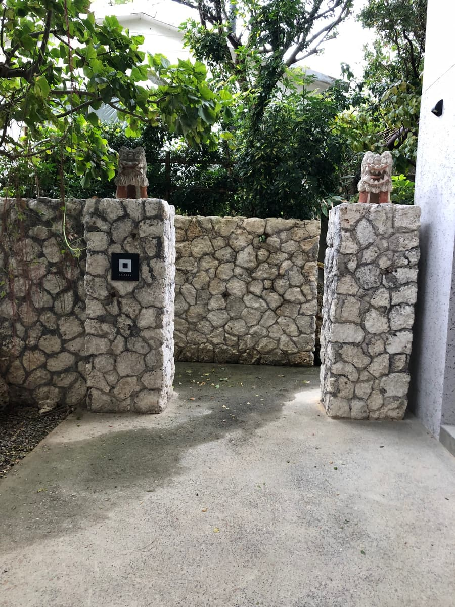
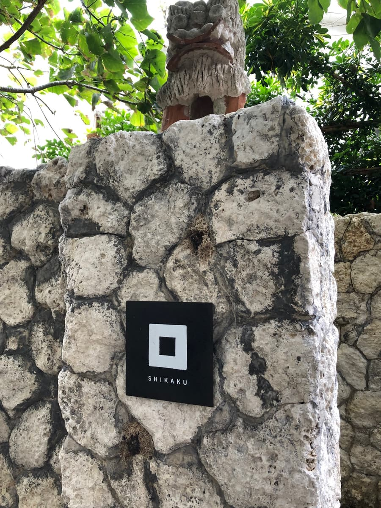
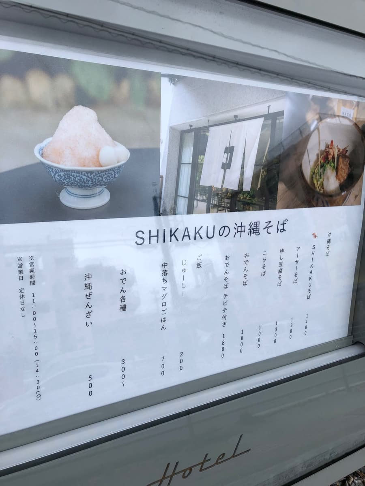
お店の前に立つと、高級感が漂っています。でも、そこは沖縄そば愛好家として、勇気を出して突入です！
店内に入ると、照明がかなり落とされていて、まるでディナータイムのバーや高級鉄板焼き屋さんのような雰囲気ですね。昼間なのにムーディーで、デートに使えそうな空間です。そして何より驚いたのが店員さんの接客ですよ！席に案内されるとき、なんとホテルレストラン並みに椅子を引いてエスコートしてくれました…！沖縄そばを食べに来て椅子を引かれたのは、私の人生で初めての経験かもしれません（笑）。ちょっと背筋が伸びますね😳
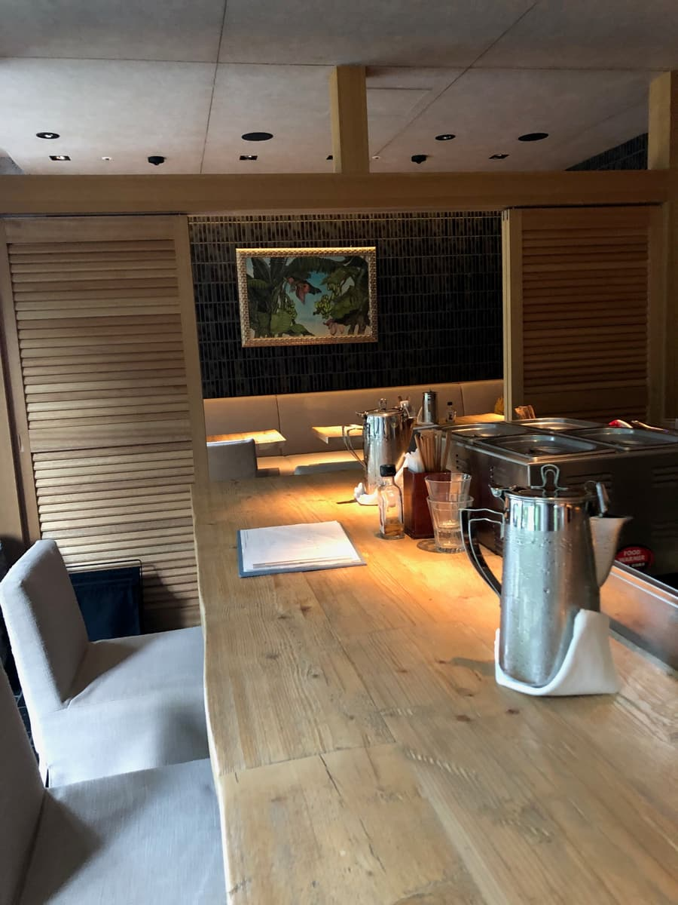
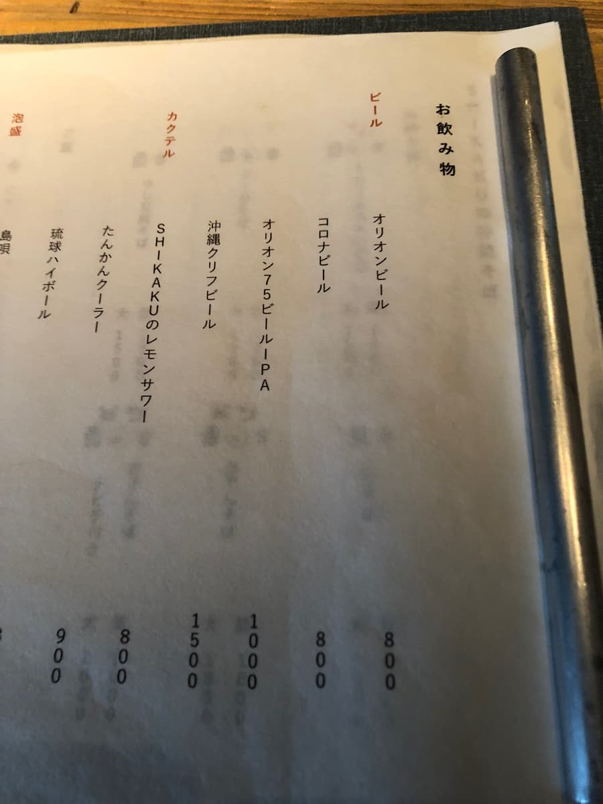
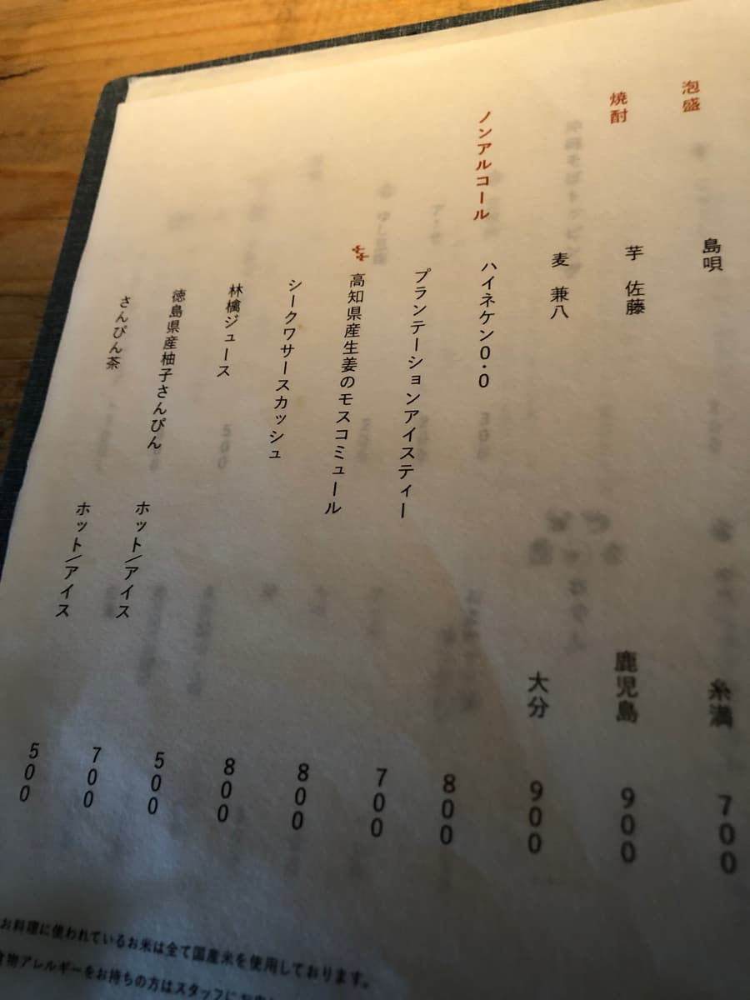
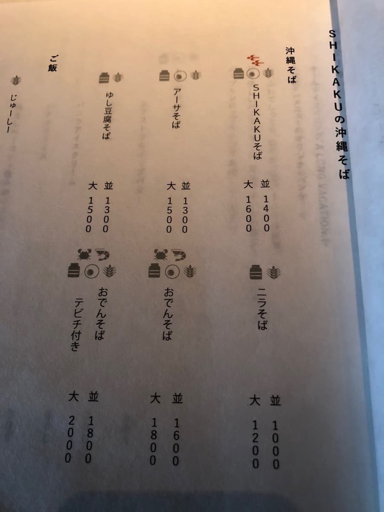
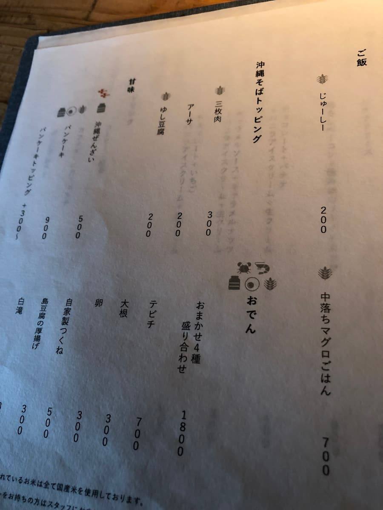
さて、席についてメニューを開くと、これまたシンプルでお洒落なデザイン。「SHIKAKUそば」の並が1400円、大が1600円。「SHIKAKUそば（並）」と、サイドメニューで店員からオススメされた「中落ちマグロごはん（700円）」を注文しました🍜
しばらくして運ばれてきたのが、こちらのセット。
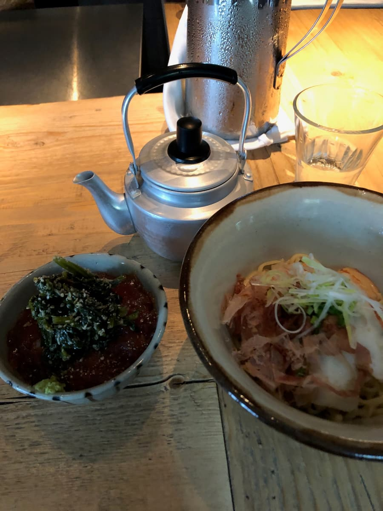
スタイルが独特ですよね！麺と具材が入った丼と、スープが入った銀色のヤカンが別々で登場しました。これ、名護市にある老舗「八重食堂」さんと同じスタイルですね！まさか那覇のホテルでこのヤカンスタイルに出会えるとは思いませんでした。でも、八重食堂さんのような庶民的なヤカンではなく、シュッとしたステンレスの急須のような佇まいで、ここにもオシャレさを感じますね✨
自分でヤカンからスープを注ぐこの儀式、ワクワクしますね。注ぐたびに、フワ〜っとカツオ出汁の良い香りが立ち上ってきます。スープは熱々をキープできるのがこのスタイルの良いところですね。
まずはスープから一口飲んでみます。うん、カツオ出汁が効いてますね。
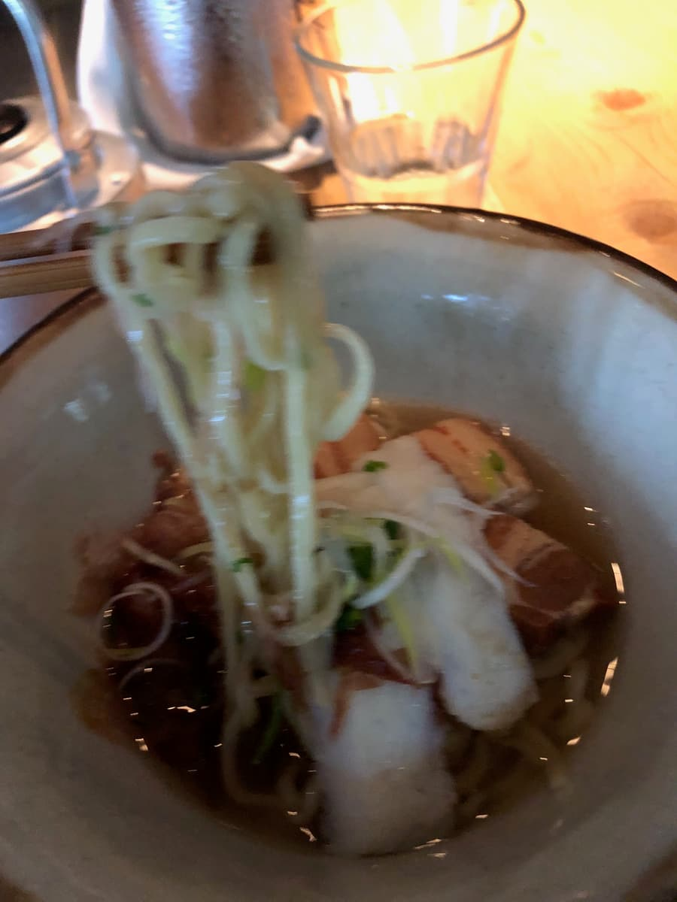
続いて麺をいただきます。麺は細麺タイプで、少しウェーブがかかっていますね。啜ってみると、ツルツルとした食感で、茹で加減は結構柔らかめです。コシが強い麺が好きな私としては、もう少し歯ごたえが欲しいところです🤔
具材は、三枚肉とカマボコ、そしてネギと鰹節がトッピングされています。三枚肉は柔らかく煮込まれていて、味付けも濃すぎず薄すぎず、適度な塩梅です。上からまぶされた鰹節がスープの香りをさらに引き立ててくれていて、風味はすごく良いですね👍
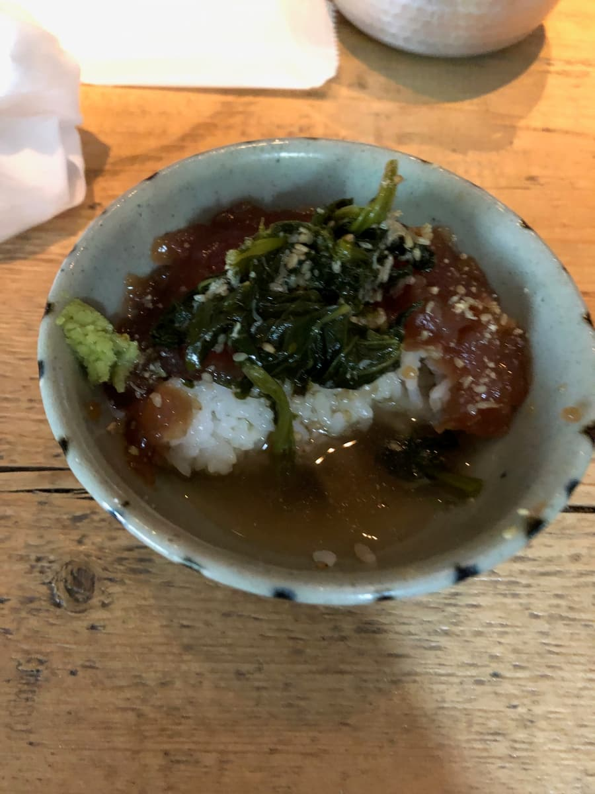
そして、サイドメニューの「中落ちマグロごはん」です！これがまた、ワサビが添えられていて美味しそうなんですが、そばのスープが入っているヤカンの出汁をマグロごはんにかけて、出汁茶漬け風にして食べました。
これが大正解！🐟✨ マグロの脂の甘みと、熱々のカツオ出汁が合わさって、半レアになったマグロが口の中でとろけます。ワサビがアクセントになって、サラサラとかきこめちゃんですね。皆さんもぜひ試してほしいですね！
評価（9点/15点）：全体を通しての感想ですが、味は普通に美味しいです。ただ、やっぱり「ホテル価格だな〜」というのは否めませんね。沖縄そばに1400円、ご飯もつけて2000円オーバーとなると、日常使いのランチというよりは、観光の思い出や、ちょっといい雰囲気で食事をしたい時向けのお店かなと思います。
店内の雰囲気は最高にラグジュアリーですし、スタッフさんのサービスも素晴らしいので、「体験」としての価値はありますね。ただ、純粋に「沖縄そばの味」だけで勝負すると、他の店たちと比べちゃうと、コストパフォーマンスの面で少し厳しめの評価になっちゃうかな〜というのが本音です😅
でも、この高級感あふれる空間で、自分でヤカンからスープを注ぐというギャップは面白かったですし、話のネタにはもってこいのお店ですね！ごちそうさまでした🙏
麺 ：★★★☆☆（3）
スープ：★★★☆☆（3）
具 ：★★★☆☆（3）